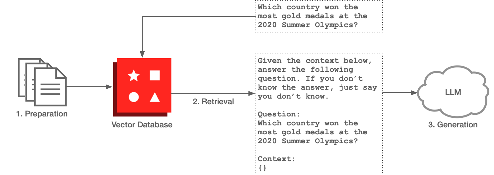

General purpose LLMs can be extended and turned into a specific purpose model by training part of the model (which does not imply nor require retraining the model in its entirety, but merely adjusting some model's parameters, while most remain unchanged). Fine-tuning involves training the model with specific data (typically prepared following a conversation format), which results in higher task-specific training. However, this approach comes with drawbacks, such as the need for retraining when fresh knowledge is required. Conversely, RAG represents a simplified and convenient way to instruct the model with the desired information when an interaction with the model is required.
RAG, presented by Meta in 2020, allows LLMs to incorporate external knowledge sources through retrieval mechanisms, extending the model capabilities with the latest information. This method enables language models to perform similarly to humans, with little information collected from the environment and in real-time. RAG has been demonstrated to be very effective. However, it requires careful prompt engineering, management of fresh knowledge, and the orchestration of different components. The following picture summarizes the flow when a user interacts with a chatbot assistant by asking a question.

We can simplify the architecture by considering the following three phases:
- Preparation. The knowledge we want to make available to increase the expertise of our LLM assistant is collected, transformed, ingested, and indexed. This requires a specific data preprocessing pipeline, with connectors to the data source and downstream connectors to the target database. In the implementation we will explore in this article, Redis is the chosen Vector Database. The data can be represented by articles, documents, books, and any textual source to specialize our chat. Of the many indexing strategies available, vector databases have been demonstrated to be effective at indexing and searching unstructured data stored in vectorial format.
- Retrieval. In this phase, the information (or context) relevant to the user's question is retrieved. Database semantic search assists in this task: the question is converted to a vector embedding, and vector search is performed to retrieve the relevant results from the database. vector search can be configured and performed with hybrid or range search strategies to determine what results best describe the question and can likely contain an answer. The assumption is that the question and the answer will be semantically similar.
- Generation. Time of prompt engineering: with the relevant context and the question in our hands, we proceed to create a prompt and instruct the LLM to elaborate and return a response. Composing the right prompt to leverage the provided context (and eventually the previous historical interactions in the chat) is crucial to getting a relevant answer to the question and guardrail the output.